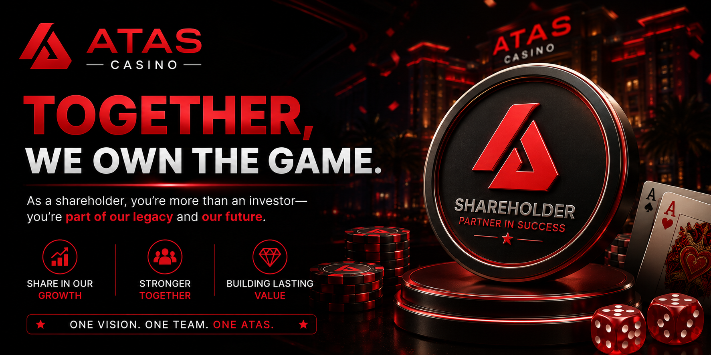

Join the ATAS Shareholder Program
Contact official customer service for the latest program details, requirements, and participation steps.
Program rules and rewards may change. Speak with ATAS customer service before joining so you receive accurate and up-to-date information through official channels only.
Reach us directly

24/7 Support Official InfoATAS Casino Shareholder Malaysia – Shareholder Program Guide
ATAS Casino Shareholder is a program page for players who want to learn more about shareholder-related information on the ATAS platform. It may include details about participation, account access, rewards, platform benefits, and customer service support.
Before joining or asking about any shareholder program, players should always check the latest official ATAS information. Terms may change from time to time, so it is important to read the details carefully and contact customer service if anything is unclear.
What Is ATAS Casino Shareholder?
ATAS Casino Shareholder refers to the shareholder information section available through ATAS Casino. This page may help users understand how the program works, what details are required, and how to contact support for more information.
You can visit ATAS Casino Shareholder to learn more about the shareholder page and related program details.
Why Learn About the ATAS Shareholder Program?
The shareholder page can be useful for users who want clearer information before joining or asking about the program. It helps players understand the process, the basic requirements, and the support options available through ATAS Casino.
- Learn about shareholder-related information
- Understand possible program requirements
- Check official ATAS platform details
- Get support from customer service when needed
- Access the page from mobile or desktop
- Review terms before making any decision
To explore the main platform, you can visit ATAS Casino Malaysia and learn more about games, account access, promotions, and player support.
How to Access ATAS Casino Shareholder Page
Players can access the ATAS Casino Shareholder page through the official website navigation or direct page link. Always make sure you are using the correct ATAS website before entering any account details.
- Visit the official ATAS website.
- Go to the menu or information section.
- Select the shareholder page.
- Read the latest program information carefully.
- Contact customer service if you need further explanation.
- Do not submit private details through unofficial links.
New users can visit ATAS Register to create an account. Existing users can use ATAS Login to access their account safely.
ATAS Shareholder on Mobile
ATAS Casino Shareholder information can be accessed on mobile devices through a supported browser or app. Mobile access makes it easier for users to read program details and contact support from their phone.
For smoother mobile access, players can visit ATAS Download to get the latest app version or follow the correct mobile access guide.
What Should Players Check First?
Before joining or asking about the shareholder program, players should check the latest details clearly. Do not rely on outdated screenshots, copied messages, or unofficial claims.
- Check the official ATAS shareholder page
- Read the terms and conditions carefully
- Confirm any requirements with customer service
- Understand possible risks before participating
- Avoid promises from unofficial sources
- Keep account and payment information private
Does ATAS Shareholder Include Promotions?
ATAS shareholder-related programs may be separate from normal casino promotions. Players should not assume that every promotion applies to shareholder participation.
Promotion rules may include claim periods, eligible games, turnover requirements, withdrawal conditions, and other terms. Always read the details before joining any offer.
You can visit ATAS Promotion to check the latest available bonus offers and campaign details.
Safety Tips Before Joining Any Program
Players should be careful before joining any casino-related program. Always verify information through official ATAS channels and avoid sharing sensitive details with unknown people.
- Use the official ATAS website only
- Do not trust random messages from strangers
- Never share your password or OTP
- Confirm program details with customer service
- Read all terms before making any decision
- Avoid offers that sound unrealistic or unclear
Common Questions About ATAS Shareholder
Many users may want to know whether the shareholder program is open, what the requirements are, and how to get more details. Since program details may change, the safest way is to check the official page or speak with ATAS customer service.
If you are unsure about any information, do not proceed immediately. Ask for clarification first and keep a copy of any official details given by customer service.
Responsible Gaming Reminder
ATAS Casino Shareholder information should be reviewed carefully, but players should also remember to manage gaming activity responsibly. Set a clear budget, manage playtime, and do not use gambling as a way to solve financial problems.
If gaming no longer feels fun or you feel that you are losing control, take a break and seek support when needed.
Final Thoughts
ATAS Casino Shareholder gives users a place to learn more about shareholder-related information on the ATAS platform. It can help players understand the program page, mobile access, support options, and important safety checks before making any decision.
For the best experience, use the official ATAS website, read the latest terms carefully, contact customer service for confirmation, and always play responsibly.
ATAS Casino Frequently Asked Questions
Browse through the most frequently asked questions